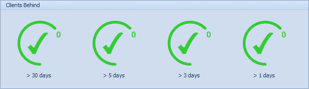
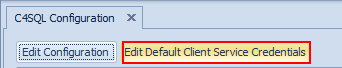
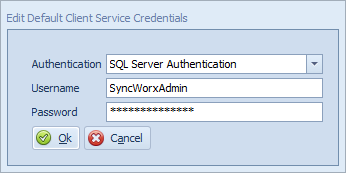

Configuration Administration Overview
The C4SQL Configuration button under the Administration ribbon tab is used to tweak various Conductor4SQL Settings.
Click on the Edit Configuration button to adjust any settings you wish to edit

General Settings
- SQLPro URL - http url for the web component of Conductor4SQL
Client Settings
- Maximum Group Size - the maximum number of clients allowed in a single client group (default 2000).
- Send To All Enabled - Enable or disable the All option in central client control (default true).
- Number of Client Upgrader Threads - The number of clients to upgrade at once when upgrading clients to a newer version of Conductor4SQL (default 5).
- Number of Checker Service Threads - The number of clients that are behind to run the Client behind diagnostic tool (default 5).
- Number of Hours Behind Needed Before Checking Client - The amount of hours that the client hasn't communicated for before the Client behind diagnostic tool will run (default 60).
Installation Settings
- Number of Bulk Pre-Checker Threads - The number of clients to test at once when running the Bulk Client Pre-Checker (default 5).
- Number of Bulk Installer Threads - The number of clients to install at once when running the Bulk Client Installer (default 5).
- Number of Bulk Uninstaller Threads - The number of clients to uninstall at once when running the Bulk Client Uninstaller (default 5).
- PreChecker Check For Existing Install - Check for if the Conductor4SQL database (SyncWorx) Database and the Conductor4SQL SQL login (SyncWorxAdmin) exists at the client (default true)
- PreChecker Ping Check - Run a ping check as part of the install pre-checker process.
- PreChecker Open Port Check - Ensure that the port (default 4321) is open before attempting to install Conductor4SQL.
- Event Notification Enabled On Client Install - Enable event auditing when client is installed (default true).
- PreChecker Timeout (Seconds) - The number of seconds to to attempt to make a connection for each Client Pre Checker test (Default 60 seconds)
- Client Install Timeout (Seconds) - Number of seconds to attempt install install step before failing. Excludes the Check For Opening Message step - (Default 360 seconds - 5 minutes)
- Client Uninstall Timeout (Seconds) - Number of seconds to attempt uninstall step before failing. (Default 360 seconds - 5 minutes)
- Client Opening Message Timeout (Seconds) - Number of seconds to wait for Check For Opening Message step in the client installer process. (Default 120 seconds - 2 minutes)
Auditing Settings
- Message Audit Enabled - Enable/Disable auditing of all messages (excluding data sync messages) received by Conductor4SQL from clients (for debugging/troubleshooting purposes).
- Message Audit Retention In Days - Every message that Conductor4SQL central receives is stored for the number of days defined before they are deleted. This data is kept for debugging purposes (default 7)
- Message Audit Cleanup Time Limit In Minutes - Set the length of time (in minutes) that the daily job is allowed to run to clear old message audit and data sync audit messages (default 60)
- Client Event Log Retention In Days - The number of days that the Client Event Audit data is kept for (default 7)
Data Sync Settings
- Data Sync Message Audit Enabled - Enable/Disable auditing of data sync messages received by Conductor4SQL clients (for debugging/troubleshooting purposes).
- Enterprise Sync Initial Sync Skip - Used for when you are using Enterprise Sync and restoring database backups at central rather than performing initial sync (default false)
- Checksum Time-to-live (Minutes) - the length of time before a checksum message expires
Clients Behind Settings
Here you can define the number of hours behind a client is before they appear as an issue on the Central Dashboard under Clients Behind

Note
Clients Behind Hours Bucket 4 - affects the Conductor4SQL - Clients Over x Hours Behind alert email.
Advanced Features
- Push Data Sync - Enables the ability to push data from Central to one or more clients (default false)
- Client Connection Network Packet Size - Adjust the packet size of ADO.NET connections to SQL when installing new clients (default 4096)
- Data Sync Queue Limit - The maximum number of data sync queues allowed to process at once
- Data Sync Session Message Limit - The maximum number of data sync queue messages that are processed before a queue gives up its execution time to another queue
- Max Service Broker Queue Limit - The maximum number of service broker queues to allow to process at once.
Click on the Save Configuration button when you have completed tweaking the Conductor4SQL settings.
Default Client Service Credentials
For Conductor4SQL to operate, it requires a login. The login can be configured to be either a SQL Server login or a Windows login. Using a Windows login is typically used in environments where Mixed mode SQL Server authentication is not an option. In this case, you can run Conductor4SQL under a Windows service account. By default the login created has a sysadmin role but these privileges can be lowered if needed.
To change the default credentials (a SQL Server login called SyncWorxAdmin that is created at each client) that all client installations use click on the Edit Default Client Service Credentials button.

Edit the credentials in the screen below and click on the Ok button when complete.

Warning
If you use Windows Authentication for the client installations, there is a caveat in that the windows user that you log in as needs SQL Server access for any client that you are connecting to via the Client Console